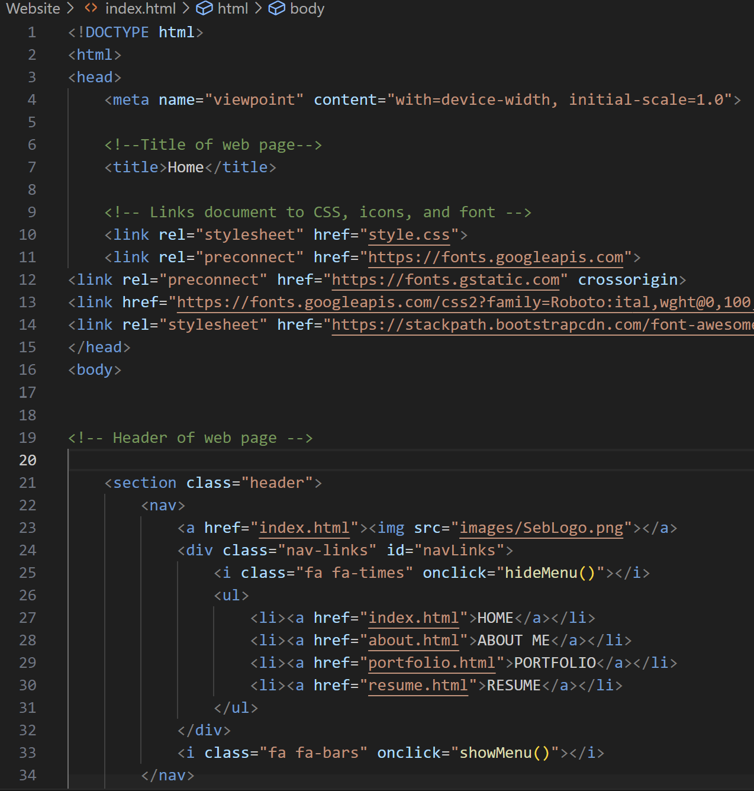
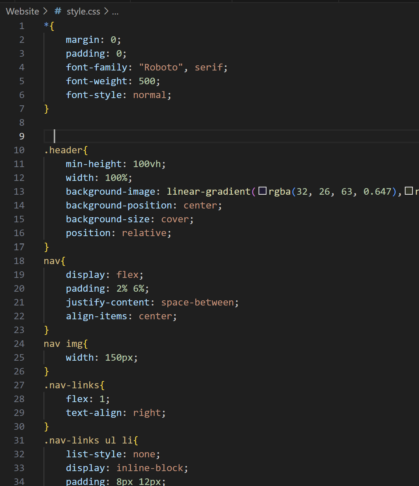

This website serves as a personal showcase of my projects and experiences, created entirely using HTML, CSS, and VSCode as my IDE. My goal was to design a platform that captures my journey and accomplishments, and I successfully brought this vision to life while learning the intricacies of web development with HTML and CSS.
When I first started creating my personal website, HTML and CSS were entirely new to me.
To learn, I immersed myself in tutorials and practiced coding in VSCode simultaneously.
The process began with building the homepage, which proved the most challenging due to
its complexity. I set up the navigation menu, selected the perfect font, developed a
JavaScript toggle menu for the mobile version, and designed the overall style using CSS.
Next, I tackled the "About Me" section, where I learned how to create and format columns
to enhance the layout of my webpage. By the time I reached the "Portfolio" section, I felt
confident working with both HTML and CSS. This page followed a similar structure to the
"About Me" section but utilized three columns instead of two for a dynamic presentation of my work.
Finally, I created a dedicated webpage for my resume. To ensure it could be viewed and downloaded without
sacrificing quality, I embedded it using an inline iframe. Once the design and content were complete,
I successfully published the site online. This project not only allowed me to develop a strong foundation
in HTML and CSS, but also gave me the confidence to create functional and visually appealing websites.
This is a portion of the HTML code that is used for the home page of my website.
This is a portion of the CSS code that is used to format the header of my website.
